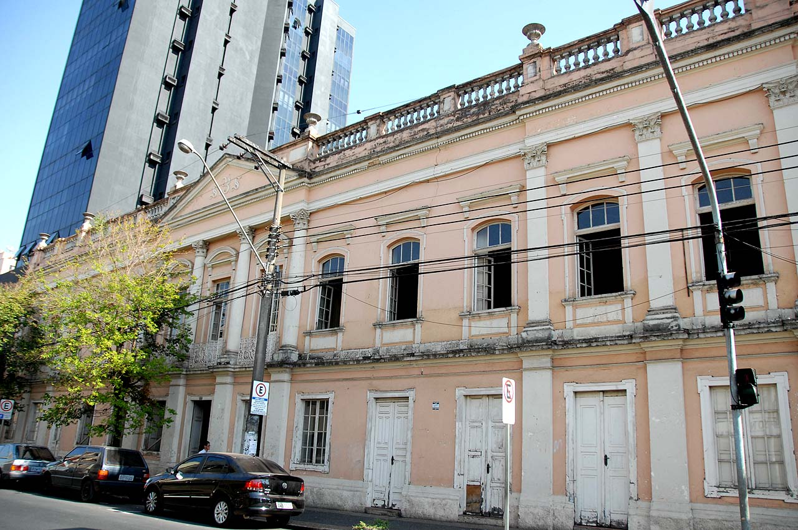
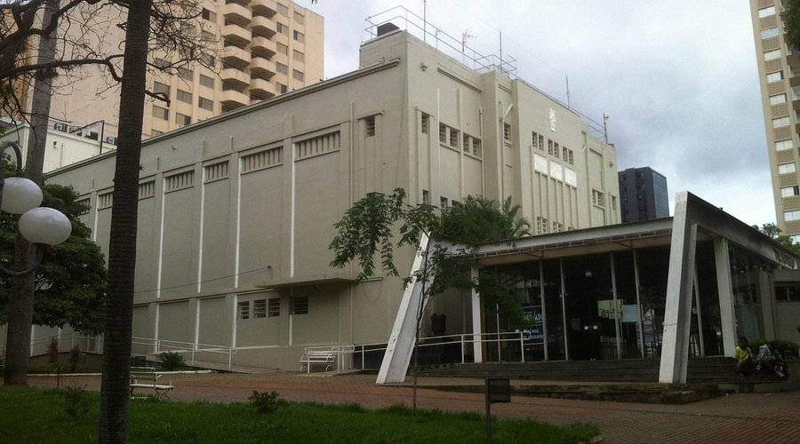
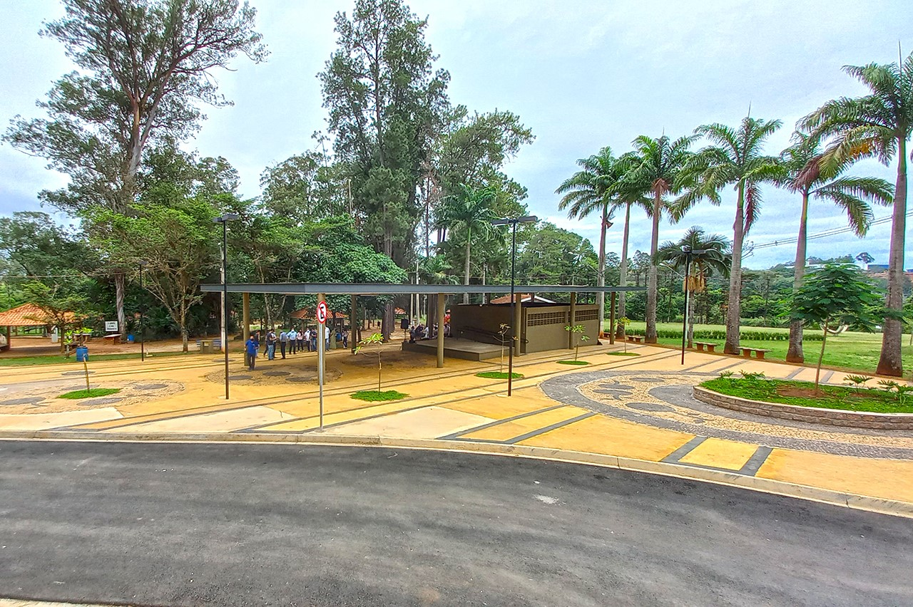
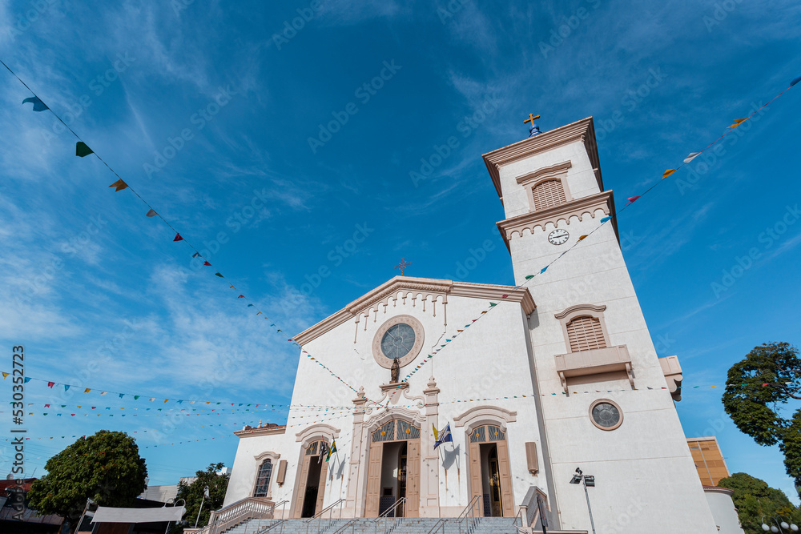
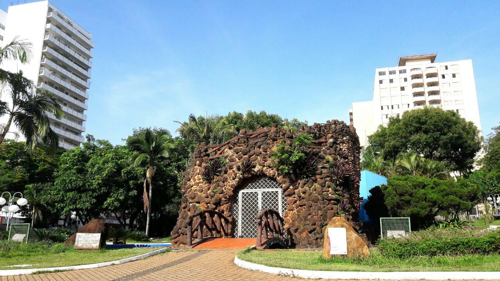

Palacete Levy
Construção do século XIX, símbolo do desenvolvimento econômico da cidade, com arquitetura imponente.

Teatro Vitória
Espaço cultural que abriga peças teatrais, musicais e eventos artísticos, sendo referência na região.

Horto Florestal
Área de preservação ambiental com trilhas, espaços para lazer, contato com a natureza.

Catedral N.S. das Dores
Uma das igrejas mais importantes da cidade, com belíssima arquitetura e localizada na região central.

Praça Toledo Barros
Praça histórica e ponto de encontro da população, cercada de jardins e monumentos importantes.

Gruta São Francisco
Espaço religioso e contemplativo com jardins e uma gruta dedicada a São Francisco de Assis.